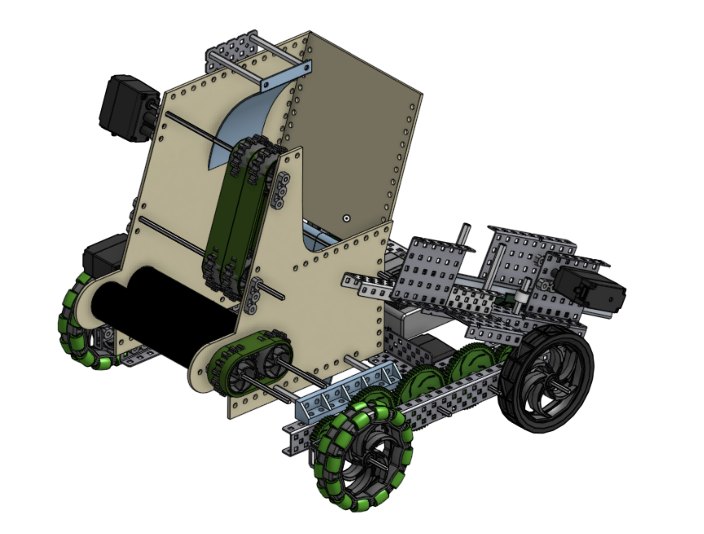
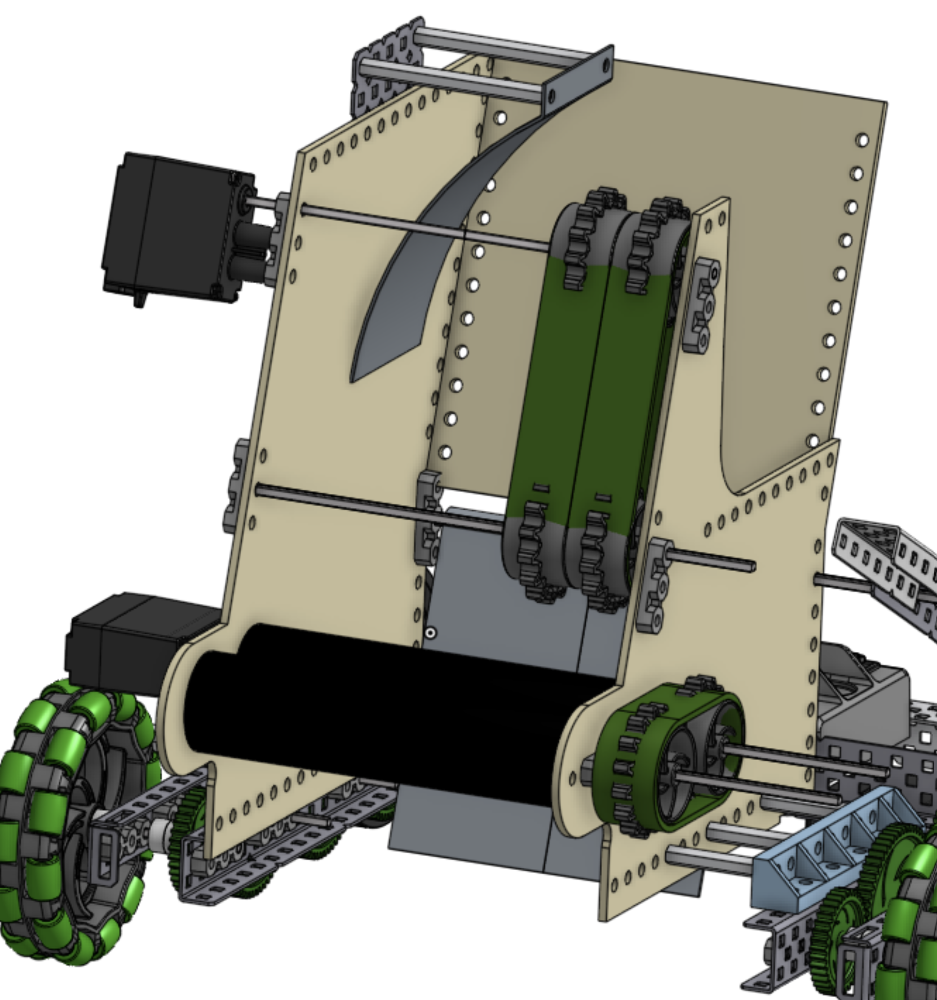
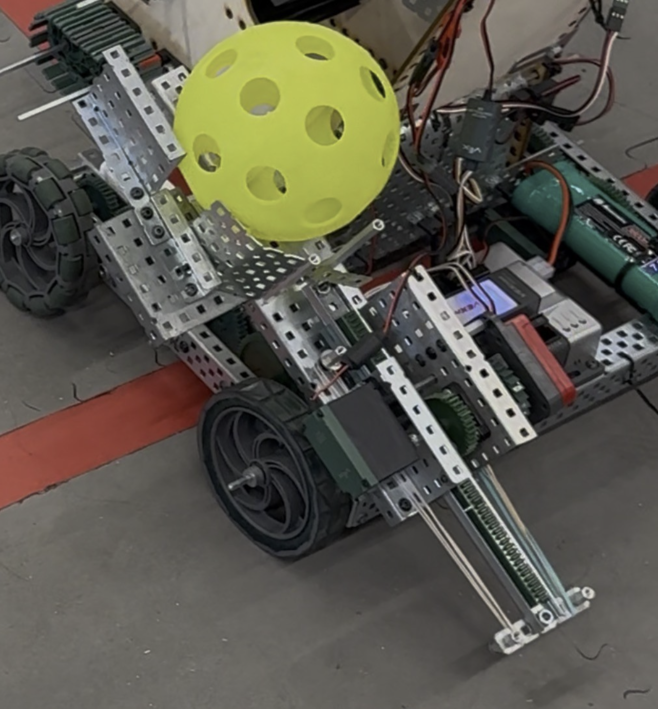

This project was developed as a ball-handling and launching robot using the VEX platform. The complete system integrated a drivetrain, dual-roller intake, vertical ball-transfer mechanism, and mechanically actuated launcher controlled through RobotC teleoperation.
The robot was designed around the complete path of the ball. Balls were collected through the intake, transferred upward through a laser-cut channel, routed into a side-mounted launching mechanism, and accelerated through the exit using stored elastic energy.

The front of the robot used a dual-roller intake to collect balls and direct them into the vertical transfer system.
The intake was integrated into a custom laser-cut structural assembly that constrained the ball path while providing mounting points for the rollers and supporting components.
The intake and transfer mechanisms were designed together so collected balls entered the upward channel with sufficient alignment for continued transport toward the launcher.
A vertical transfer channel routed balls from the intake toward the launcher. The channel was constructed from laser-cut wood components and supported using custom 3D-printed mounting brackets.
The channel geometry constrained the ball during upward transport and maintained alignment as it approached the side opening leading into the launching mechanism.
Designing the transfer path required coordinating the intake position, channel geometry, and launcher entry point so each subsystem could pass the ball to the next without manual repositioning.

The launcher used stored elastic energy to accelerate the ball through a side-mounted exit. A rack-and-pinion mechanism converted mechanical motion into linear ball acceleration along the launching path.
The side-feeding configuration allowed the vertical transfer system to deliver balls directly into the launcher without requiring the entire robot to be arranged around a front-facing exit.
The ball entry location, linear travel path, and exit geometry had to be coordinated so that the transfer system and launcher operated as a single integrated mechanism.
The primary challenge was integrating multiple mechanisms into a continuous ball path. A successful intake was not sufficient unless balls could also be transferred into the launcher with consistent alignment.
The vertical channel and side-mounted launcher introduced packaging constraints, requiring careful placement of structural components, motors, custom brackets, and launching hardware.
The project also required combining standard VEX hardware with laser-cut and 3D-printed components, creating interfaces between different fabrication methods and mechanical systems.
This project demonstrated the importance of system-level mechanical design. The intake, transfer mechanism, and launcher could not be optimized independently because each subsystem depended on how effectively it passed the ball to the next.
The final design combined off-the-shelf VEX components with custom laser-cut and 3D-printed parts, providing experience in CAD integration, mechanism design, fabrication, and electromechanical system assembly.
Future improvements could focus on refining ball alignment, improving launch consistency, and simplifying the interfaces between the transfer and launching subsystems.